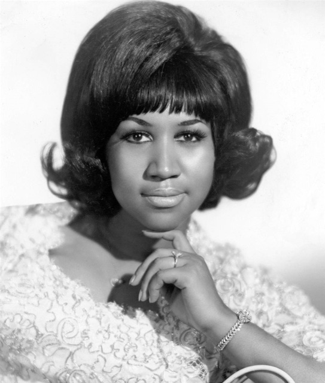
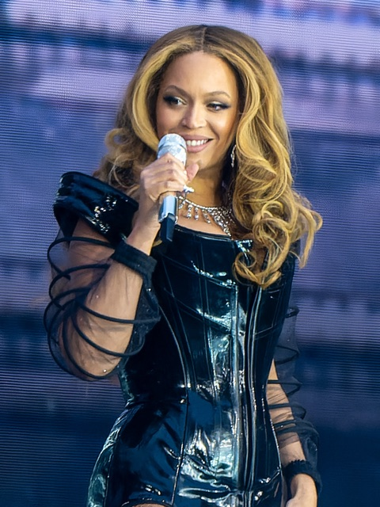
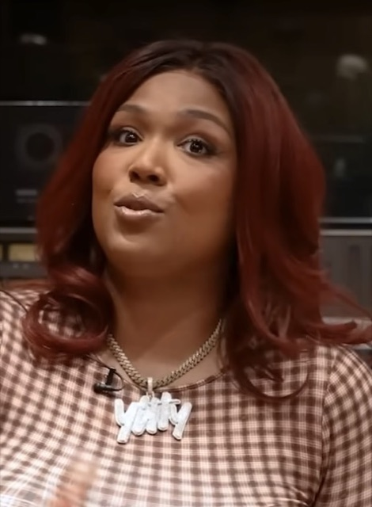
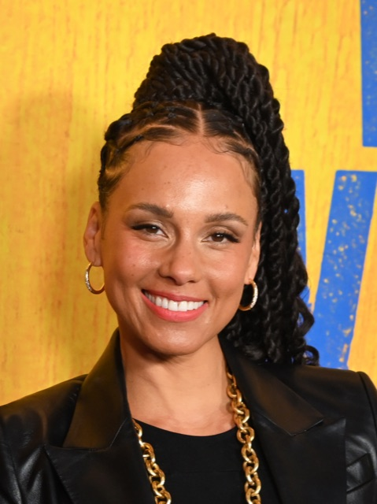
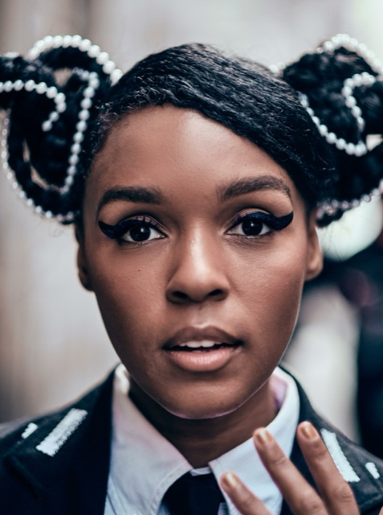
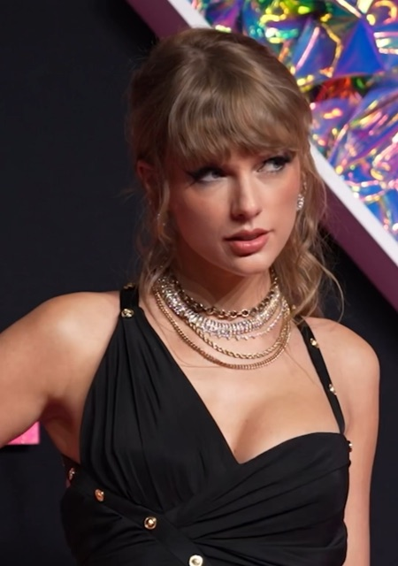

A space for students, especially girls and Black girls, to learn about feminism, share real experiences, and stand behind each other. Anonymous, always.
Start where you are
Feminism, Black feminism, intersectionality, explained with respect for your intelligence.
What you’ve lived through matters. Put it on the wall. No name, no account, no pressure.
Read what others have shared and respond with support. Sometimes one reply changes a whole day.
Need real help right now? Kids Help Phone: text CONNECT to 686868. Free, confidential, 24/7.
In the culture
It doesn't only live in essays and history books. It lives in the artists who turn it all the way up. A few who carry the message.

Aretha Franklin
The Queen of Soul, whose demand for respect became an anthem for women and the civil rights movement alike.

Beyoncé
Puts a plain definition of feminism on the world's biggest stages, and centers Black women while she does it.

Lizzo
Turns self-love and taking up space, unapologetically, into pop you can't sit still to.

Alicia Keys
A fifteen-time Grammy winner who writes about the quiet, everyday strength of women.

Janelle Monáe
Claims Black womanhood and queerness out loud, in her music and on screen, without apology.

Taylor Swift
Reshaped the music business on her own terms and names the double standards women face.
Starting points, not a canon. Who's on your feminist playlist?
Photos via Wikimedia Commons. Aretha Franklin: public domain. Beyoncé: Raph_PH (CC BY 2.0). Lizzo: Million Dollaz Worth of Game (CC BY 3.0). Alicia Keys: PhilipRomanoPhoto (CC BY 4.0). Janelle Monáe: Myles Kalus Anak Jihem (CC BY-SA 4.0). Taylor Swift: iHeartRadioCA (CC BY 3.0).